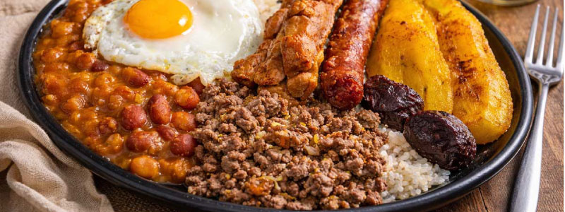
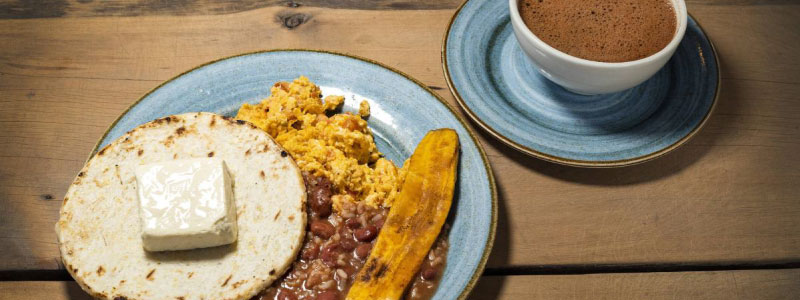
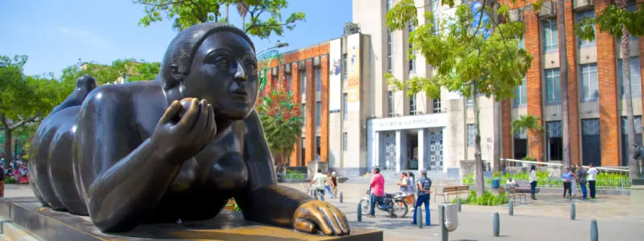

Dónde Comer
En este buscador, vas a poder filtrar por nombre, tipo de establecimiento y por barrio
ver más
En este buscador, vas a poder filtrar por nombre, tipo de establecimiento y por barrio
ver más
En Medellin vas a encontrar platos típicos y comida de todo el mundo
ver más
Admira las icónicas esculturas del maestro Fernando Botero y recorre uno de los lugares culturales más representativos de Medellín.
ver más